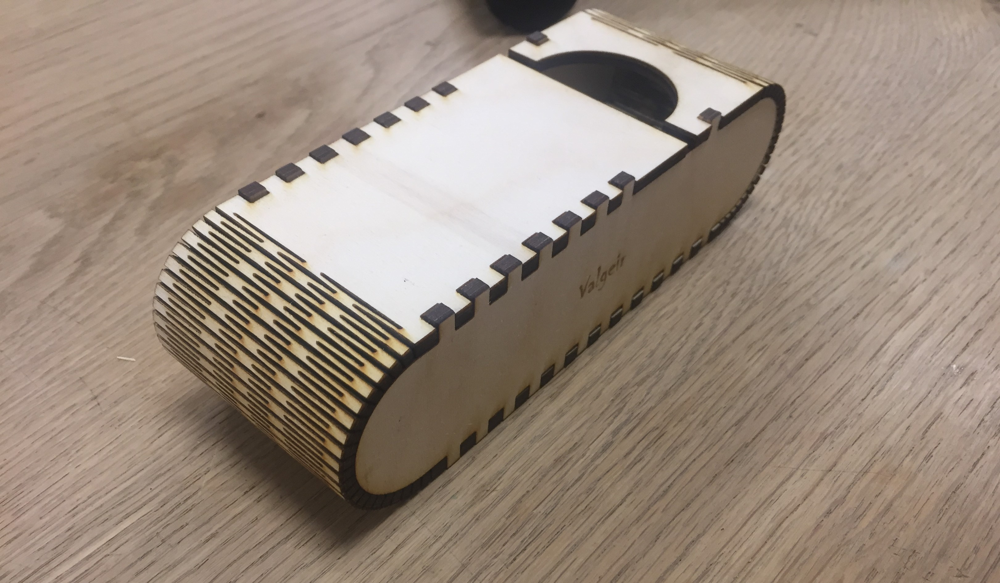

Computer-aided design and laser cutting
Project 2
Project Description
For this project we should design a parametric press fit model of building units. The model should be able to resize when the parameters change, for example thickness of material and kerf parameters. The model is then cut with a laser cutter machine. Prior to cutting the model, there is a group project where you and your group partner will need to determine the kerf parameter of the laser cutter machine you will be using in order to make a good press fit model.
Kerf test
I created the kerf test with Halldór.
Preface
I had no specific idea in mind before this project, so I began by brainstorming. A lot came to mind, some ideas where good others not so. At last after some time speculating I decided to create a cool case for your glasses using living hinges and finger joints, mainly because I was interested to use living hinges.
On the web there where mainly two common design:
I decided to go with the one on the left because I felt it was more simple in design and it relied both on press fit and living hinges, unlike the other design which is mainly using living hinges properties. And also, I did not want to base nearly my whole design on living hinges because they are difficult to use in parametric design, especially when it is your first living hinges structure.
CAD and laser cutting
For this project I used I used Fusion 360 for parametric design, Inkscape for creating a pdf file from a dxf file, Epilog Mini Helix 24 laser cutter for cutting a 4x300x600mm plywood plate, rasp and rubber hammer.
1. Preparing design
For my preparation I began by watching this video. It helped me to a lot to create finger joints and to use the rectangular pattern command in Fusion 360 which was very important for my model, both to create the finger joints and the living hinges. For the living hinges I decided to go with straight lines because they are simple in design and they are said to have good flexibility and endurance. The basics for straight line living hinges is: the less space between the lines (sometimes called torsional link width) the smaller the bending radius will be, and in able to bend the material in x degrees the size of the lines (sometimes called link clearance) has to be big enough for the thickness of the material. The following images are descriptive for living hinges design:
I didn't find any trustworthy equations to calculate the spacing and line thickness to allow x degrees of bending for a y mm bending radius. Therefor I decided to use the kerf parameter as line thickness and had the spacing depend on the height of the box because the bending radius will change when the height changes. I found a drawing online for a 4mm plywood, the same thickness as I will use, and used the same ratios for torsional link length and torsional spacing for my calculations to increase the changes that my design will work. I opened the dxf file of the drawing in Inventor and found some important dimension, but I forgot to take a photo of it and save it. The files and my main design inspiration can be found here.
2. Model in Fusion 360
I drew a rough prototype on paper with some parameters before I began desiging in Fusion 360. It is pretty confusable and not all parameters are correct, but for those who want to see it I leave it here:
I built most of my parameters on five main parameters: length, width, heigth, thickness and kerf. I only accounted for the kerf parameter in the finger joint design, because that is the only part of the design which is dependant on press fit and the kerf will have minimal impact on other parts of the design. I based most of the living hinges calculations on ratios which gave me similar design as the inspiration design above, but only my design is resizable. The parameters in Fusion 360 are the following:
For the part that revolts around the two side part I drew the following sketch:
I learned by watching the video linked above about finger joints, that if you want to be able to resize the model you will need to use the rectangular pattern command in the solid section, not in the sketch section. To be able to use rectancular pattern I needed to extrude the lines for the living hinges, therefor I created a rectangle with 0.001mm width. Because of that the laser cutter will follow both lines and cut twice on the same place. There shouldn't be any effect but the same was happening in our kerf test and there it did indeed have some effects, so I'm not sure if it affected the model.
For the finger joints I did similar as for the living hinges: sketched, extruded and used rectangular pattern. To finish the part with the living hinges I used the mirror command because I had decided to only draw one half of the part because of symmetry.
The two side parts where relatively easy when I had got ahold of the rectangular pattern command and used the correct settings. I only drew one part because they are duplicate, and again I used rectangular pattern for finger joints the same way as for the part with the living hinges. To create the second one I simply used copy paste. Now the model is complete and fully resizable:
3. Preparing for laser cutter
Before I created a dxf file I needed to combine all of my outlines that I created into a single sketch. To do that I created a sketch on "Surface body", then Create->Project/Include->Project, selected my two side bodies and clicked on ok. Before exiting the sketch the you will need to again go to Create->Project/Include->Project, and selecting "Surface body". Then I right clicked on my new combined sketch and saved as dxf.
Next Inkscape will be used to create a vector file that the laser cutter can read. I began by changing the page size: File->Document Properties->Custom size->300x600mm, the same size as the plywood material the laser printer can use. Then I selected all and changed the line tickness to 0.02mm and line color to red by going to Object->Fill and Stroke. The last step is to save the file as pdf, for the laser cutter to read. The pdf file looked like this:
4. Cutting
I followed the Fablab instruction manual and got some help from Arnar at Fablab to use the laser cut machine. The cut went smoothly. To use the cutter you will need to adjust the height and define a home point. Then open your pdf file and print it, but remember to go to properties and change the settings to the ones used for the laser cutter you will be using, and whether you are using only vector or raster, or both. Then print it and press on go on the machine.
5. Assembly
As I began to assembly the model I found it difficult to press fit the finger joints. I am pretty confident that my design is correct, but it is either a flaw in my design of the finger joints or a small error in measuring the kerf parameter. Either way I began using a small rasp to make the fingers smaller and then a rubber hammer to press fit the items together:
Now it was time to put the living hinges to the test! I was a little skeptical about them. Among the questions I had in mind before where for example: Would the bending radius be enough? Was the arc length correct? Would it be brittle? To my surprise the living hinges where very flexible and looked quit strong. When I was trying to fit them around the half circles on the side pieces I saw immediately that the arc length wasn't long enough, but becuase of the hinges flexibility I was able to make it fit!
At first it was quit difficult to open the flap that is to be unlocked whenever the case is opened, but now a few days later the living hinges have seemed to stretched a little bit, making it easier to open it.
Overall, I was very happy with my design and it turned out better than I thougth it would! Next step would be to glue a soft material inside to take off impact and keeping the glasses from scratching. Something I will definitely do in the future when I have time.
Afterthoughts
When I had fully assembled my model I saw some flaws. The main ones are:
- The arc length of the living hinges should have been a little longer. For my design I used the same arc length as the semicircles on the side parts but I added two Eps, which is the parameter for the torsional link width. On the hindsigth I probably should have added something like four Eps to make it easier in assembly. But two Eps are also fine, as I mentioned above the living hinges stretch with time and now it's not difficult to open the case as it was in the beggining.
- There is a small space between the two adjecent sides as seen on the figure below. I had anticipated this before laser cutting by measuring in Fusion 360, and tried to find the bug in the model but I just couldn't find it.
- The depth of the fingers joints is the same as the width of them. I should have extruded the fingers to be the same as the thickness parameter, instead of being the same as the finger width. For this selection of parameters it was alright because the diffrence between thickness and finger width is little.
Workload
- 2 hours: Determine kerf with Halldór
- 4 hours: Determine parameters and handdrawn sketch
- 4 hours: Model in Fusion 360
- 2 hours: Preparing for laser cutter
- 1 hour: Cut and assembly
- 5 hours: Documentation
- 18 hours: Total
Design files
Press here to download the design files for a resizable glass case.
Search engine key words
living hinges - kerf bending - calculating living hinges - calculating kerf bending - laser cut glasses case - laser cut living hinges - finger joints with kerf - fusion 360 living hinges - kerf